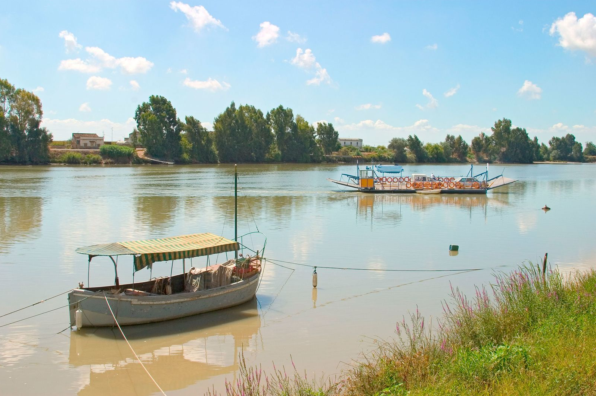
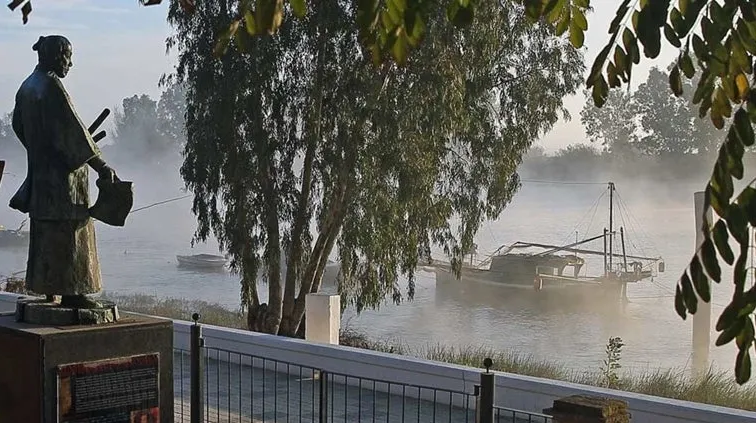
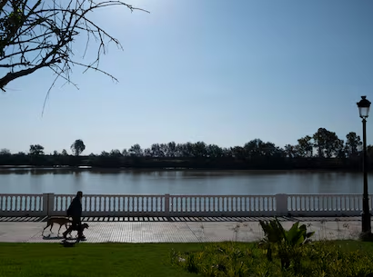
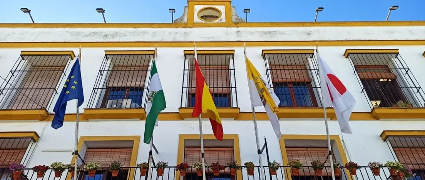

Historia
Los primeros asentamientos en Coria del Río datan del 2600 a.C., en el Cerro de San Juan. Durante la Edad del Bronce y la época ibérica, la zona fue conocida como Caura, que significa “Lugar Alto”. Los fenicios fundaron un puerto comercial en el río Guadalquivir, y más tarde los romanos le otorgaron el privilegio de acuñar moneda. En el siglo IX, los vikingos invadieron la zona, dejando huella en la historia local.

Geografía
Coria del Río se encuentra en la provincia de Sevilla, a unos 12 km de la capital. Está situada en la margen derecha del río Guadalquivir, en una zona de transición entre el Aljarafe, La Ribera y la Marisma. Con una altitud de 5 metros sobre el nivel del mar y una superficie de 62 km², el municipio cuenta con una población de más de 31.000 habitantes.

Cultura y tradiciones
La Feria de Coria del Río, fundada en 1838, es una de las más antiguas de Andalucía. Se celebra cada septiembre con actuaciones gratuitas, atracciones, paseos a caballo y espectáculos innovadores como drones en lugar de fuegos artificiales. El pueblo también honra su vínculo con Japón, celebrando la Semana Cultural Japonesa y conservando apellidos como “Japón” entre sus habitantes.

Gastronomía
Entre los platos típicos destacan el arroz con cangrejo y el albur del Guadalquivir. También se pueden degustar dulces tradicionales como las “orejitas de habas”, hechas con huevo, azúcar y harina.
